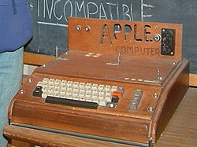
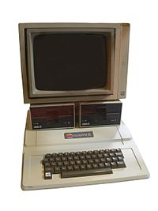
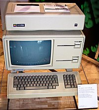

Apple Computer Inc e Apple I

A Apple Computer Inc foi criada em abril de 1976 para comercializar um computador pessoal criado por Wozniak poucos meses antes. A ideia para o equipamento surgiu durante uma reunião do Homebrew Computer Club em 5 de março de 1975. Após ver um folheto sobre microprocessador, Wozniak teve uma visão onde visualizou "um teclado, uma tela e um computador, todos juntos num pacote integrado". Após meses trabalhando no projeto, em 29 de junho de 1975 surgem os primeiros caracteres na tela, em resposta ao digitar das teclas. "Digitei algumas teclas no teclado e fiquei chocado! As letras apareceram na tela. Foi a primeira vez na história que alguém digitou uma letra num teclado e viu aparecer na tela de seu computador, bem na sua frente" afirmou Wozniak.
Fascinado pela funcionalidade do aparelho, Jobs convenceu Wozniak a comercializar o equipamento. Para tanto, decidiram abrir uma empresa, juntando um elemento mais velho e experiente chamado Ronald Wayne, colega de Wosniak na Atari. Entre as primeiras sugestões para nome estavam termos da computação como Matrix, neologismos como Executek e nomes "desinteressantes" como Personal Computer Inc. Por fim, Jobs propõe Apple Computers. "Eu estava numa das minhas dietas frugívoras. Tinha acabado de voltar da fazenda de maçãs. O nome parecia divertido, espirituoso e não intimidante. Apple tirava a pressão da palavra computador. Além disso, nos poria à frente da Atari na lista telefónica", explicou ao amigo Wozniak.A divisão de ações e lucros foi dividida em 45% para Jobs, 45% para Wozniak e 10% para Wayne. Este último, que foi o criador do primeiro logotipo da Apple e do manual do Apple I, acabaria por vender algumas semanas depois, a sua parte aos demais sócios por oitocentos dólares.
O primeiro grande lote, com cinquenta unidades Apple I foi vendido à Byte Shop. Paul Terell, dono da loja de informática, ofereceu quinhentos dólares por computador se a Apple os entregasse totalmente montados. Após levantar 25 mil dólares para o empreendimento, Jobs instalou a equipe da Apple na garagem da sua casa, para começar a montar os computadores.
Apple II

O próximo projeto da Apple Inc se tornaria o computador pessoal mais bem sucedido da história, vendendo quase seis milhões de unidades em dezesseis anos. Jobs e Wozniak planejavam um computador com "excelente invólucro, teclado incorporado e ser integrado de ponta a ponta, da fonte de alimentação ao software e ao monitor". O projeto foi viabilizado graças a Mike Markkula que ofereceu uma linha de crédito de 250 mil dólares em troca de uma participação acionária. Em 3 de abril de 1977 a nova empresa — Apple Computer Co. — foi oficialmente criada e comprou a antiga sociedade que havia sido formada por Jobs e Wozniak nove meses antes.
A fonte de alimentação do Apple II foi outra revolução. Jobs queria evitar a necessidade de um ventilador e encomendou a construção de uma nova fonte ao engenheiro Rod Holt da Atari. Holt construiu uma fonte de energia comutável, que ligava e desligava milhares de vezes o que possibilitava armazenar a energia por muito menos tempo e consequentemente libertava menos calor. “Essa fonte de alimentação comutável era tão revolucionária quanto a placa lógica do Apple II. Rod não recebe muito crédito por isso nos livros de história, mas deveria. Todos os computadores usam agora fontes de alimentação comutáveis, e todos roubam o projeto de Rod”, explicou Jobs mais tarde.
Para o design, Jobs queria um trabalho que se destacasse diante dos computadores em suas caixas cinza metálico. Ele queria um invólucro elegante, feito de plástico moldado leve. O trabalho foi encomendado originalmente a Ronald Wayne, mas coube ao consultor Jerry Manock produzir a versão final.
O Apple II foi lançado oficialmente em abril de 1977 durante a primeira Feira de Computadores da Costa Oeste em San Francisco. A Apple recebeu trezentas encomendas na exposição, e Jobs conheceu um fabricante de tecidos japonês, Mizushima Satoshi, que se tornou o primeiro revendedor da Apple no Japão.
Apple III
Lançado em maio de 1980, o Apple III foi um fracasso. Randy Wigginton, um dos engenheiros, resumiu o problema: “O Apple III era uma espécie de bebê concebido durante uma orgia; mais tarde, todos estão com uma dor de cabeça terrível, e lá está aquele filho bastardo, e todo mundo diz: não é meu”. Os condicionalismos de hardware, sobreaquecimento por falta de ventilação e outros defeitos levaram muitos compradores a seguir a plataforma PC.
Apple Lisa
O Apple Lisa foi concebido inicialmente como uma máquina de dois mil dólares baseada em um microprocessador de 16 bits, em vez dos 8 bits usados no Apple II. O projeto nasceu em 1979. Foi o primeiro computador da Apple a utilizar a interface gráfica, baseado na tecnologia do Xerox Alto. Jobs inicialmente participou neste projeto mas saiu dele para criar o projeto "Annie" que mais tarde seria rebatizado para Macintosh.
Embora fosse óbvio, levou anos até que Jobs admitisse que o equipamento foi batizado com o nome de sua primeira filha, Lisa Nicole Brennan-Jobs. Jobs renegou sua filha nos primeiros anos de vida. "Eu não queria ser pai”, explicou certa vez. A relação de pai e filha só se tornou mais próxima quando a menina completou oito anos. Os engenheiros da Apple acabaram criando o acrônimo de Local Integrated Software Architecture para explicar o nome.
Embora revolucionário - contava com um sistema de proteção de memória aprimorado, sistema multitarefas, um sistema operacional baseado em disco rígido, suporte para 2 MB de memória RAM, slots de expansão, além da interface gráfica e uso de rato/mouse - o Apple Lisa foi um fracasso comercial. Custava 9 999 dólares no varejo. Parte do fracasso comercial deveu-se a própria Apple e Jobs que converteram o Macintosh num concorrente mais barato que o Lisa com agravante do Mac ser mais rápido e totalmente incompatível com predecessor. O Lisa seria descontinuado em 1989 após dois upgrades, o Apple Lisa 2 e o Macintosh XL (um Lisa 2/10 com emulador de Macintosh).
Segundo a biografia de Walter Isaacson, o Lisa inicialmente estava sendo desenvolvido pela equipe de Jobs, mas por ordens da diretoria da Apple ele fora afastado. Jobs estava interessado em desenvolver um computador pessoal que pudesse chamá-lo de sua "criação". Nesse caso empenhou-se no desenvolvimento de um computador que revolucionou a indústria da informática, o Macintosh, que tornou-se um sucesso em vendas e em elogios por parte de influentes veículos de comunicação da época. Tal foco no Macintosh trouxe prejuízos a fama do Apple Lisa.